Networking Devices
Physical devices - required for communication and interaction between hardware on a computer network. Equipment that connects directly to a network segment is referred to as a device. There are 2 types of devices which are an end-user devices and network devices.
| End User Devices | |||||
|---|---|---|---|---|---|
| Personal Computer | Mac | Laptop | Printer | File Server | IRM Mainframe |
| 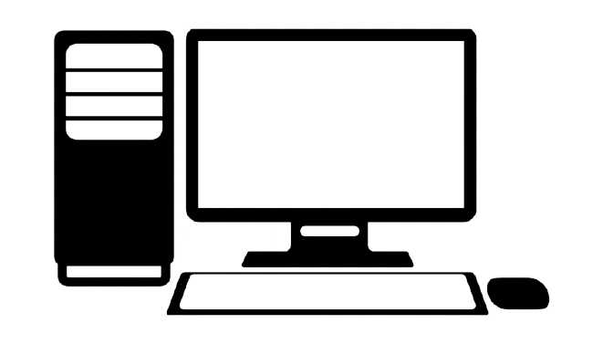 |  |
||||
End user device - a personal computer (desktop or laptop), consumer device (e.g., personal digital assistant (PDA), smart phone), or removable storage media (e.g., USB flash drive, memory card, external hard drive, writeable CD or DVD) that can store information. It is a technical term referring to an IT hardware that your employees or simply some people in general would use during work, in off-hours, for leisure or any other purpose.
| Repeater 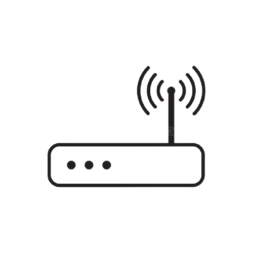 |
Regenerates a signal. |
|---|---|
| Hub 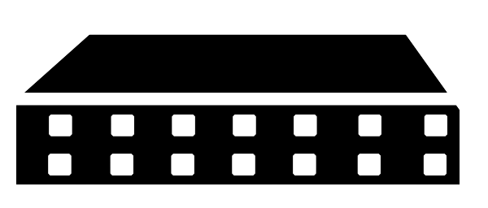 |
Concentrates connections and may regenerate a signal. |
| Bridge 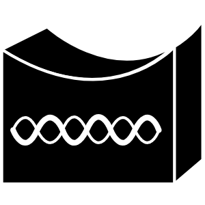 |
Convert network transmission data formats as well as perform basic data transmission management. |
| Switch 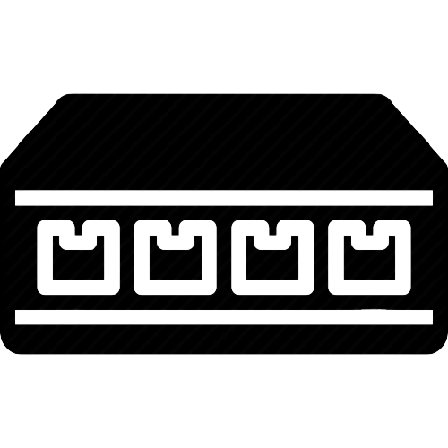 |
Adds more intelligence to data transfer management. |
| Router 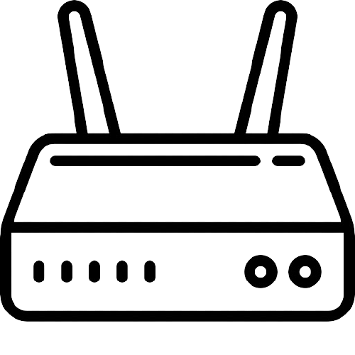 |
Includes routing and other services. |
Networking devices - refers to equipment that connects to a network, which includes computers, printers and most A/V gear (receivers, media hubs and servers, Blu-ray players, etc.), which operate in an Ethernet or Wi-Fi network or both. Smartphones and tablets all have Wi-Fi but are considered mobile devices. The satisfaction of learning the use of these devices is that it can help design and built a network that is secure and serves the organization well. However, to ensure the ongoing security and availability of the network, a person should carefully monitor the network devices and activity around them in order to quickly spot hardware issues, configuration issues and attacks.
Network Topology
Network topology - refers to the manner in which the links and nodes of a network are arranged to relate to each other. Topologies are categorized as either physical network topology, which is the physical signal transmission medium, or logical network topology, which refers to the manner in which data travels through the network between devices, independent of physical connection of the devices.
Physical topology - indicates arrangement of different elements of a network. It reflects physical layout of devices and cables to a form a connected network. It is concerned with essentials of network ignoring minute details like transfer of data and device type. It is the actual layout of the wires or media operated in the specified topology.
| Bus Topology 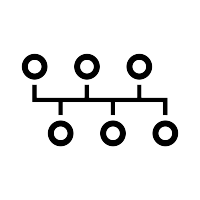 |
Used for Small workgroup local area networks (LANs) whose computers are connected using a thinnet cable. Trunk cables connecting hubs or switches of departmental LANs to form a larger LAN. Backboning, by joining switches and routers to form campus-wide networks. |
|---|---|
| Ring Topology 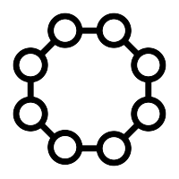 |
A topology for a Local Area Network (LAN) in which every device has exactly two neighbours for communication purposes. Typically, all messages travel through a ring in the same direction. A failure in any cable or device breaks the loop and will take down the entire segment. |
| Star Topology |
All nodes are individually connected to a central connection point, like a hub or a switch. A star takes more cable than e.g. a bus, but the benefit is that if a cable fails, only one node will be brought down. |
| Extended Star Topology 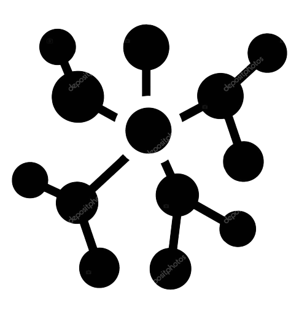 |
A star network with an additional networking device connected to the main networking device. Typically, a network cable connects to one switch, and then several other switches connect to the first switch. |
| Hierarchical Topology 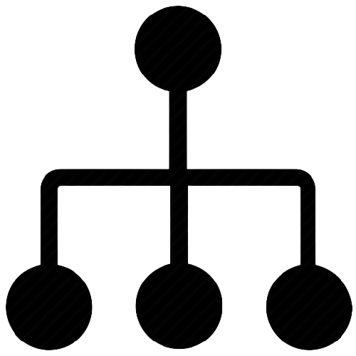 |
The hierarchical network design model serves to help you develop a network topology in separate layers. Each layer focuses on specific functions, enabling you to choose the right equipment and features for the layer. |
| Mesh Topology 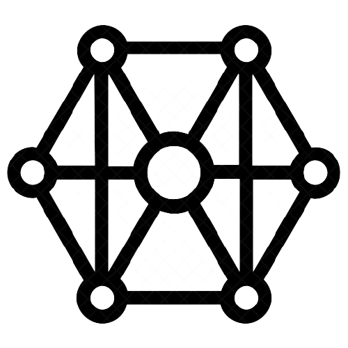 |
A network setup where each computer and network device is interconnected with one another. This topology setup allows for most transmissions to be distributed even if one of the connections goes down. It is a topology commonly used for wireless networks. |
| Broadcast Topology |
The function of this topology is to provide a message to all hosts on the same network segment. There is no order that hosts must follow to transmit data. Messages are sent on a First In, First Out (FIFO) basis. Token passing controls network access by passing an electronic token sequentially to each host. |
|---|---|
| Token Passing Topology |
This logical type of topology is a local area network that sends data in one direction throughout a specified number of locations by using a token. The token is the symbol of authority for control of the transmission line. This token allows any sending station in the network to send data when the token arrives at that location. |
Logical Topology - reflects arrangement of devices and their communication. It is the transmission of data over physical topology. It is independent of physical topology, irrespective of arrangements of nodes. It defines the process of how the media is accessed by the hosts when sending data.
Network Protocols
Protocol Suites - reflects arrangement of devices and their communication. It is the transmission of data over physical topology. It is independent of physical topology, irrespective of arrangements of nodes. It defines the process of how the media is accessed by the hosts when sending data.
Protocol - a formal description by which a set of rules and conventions that govern a particular aspect of how devices on a network communicate. It is a standard set of rules that allow electronic devices to communicate with each other. These rules include what type of data may be transmitted, what commands are used to send and receive data, and how data transfers are confirmed.
Functions of Protocol
- Protocols control all aspect of data communication. It allows different network devices to communicate with each other. They are used in both analog and digital communications and can be used for important processes, ranging from transferring files between devices to accessing the internet.
- How the Physical network is built.
- How the computers connect to the network.
- How the data is formatted for transmission.
- How that data is sent.
- How to deal with errors.
LANs - also known as a Local Area Network is a collection of devices connected together in one physical location, such as a building, office, or home. It can be small or large, ranging from a home network with one user to an enterprise network with thousands of users and devices installed in buildings or facilities.
- Operate within a limited geographic area.
- Allow many users to access high-bandwidth media.
- Provide full-time connectivity to local services.
- Connect physically adjacent devices.
| Devices and Technology (LAN) | ||||
|---|---|---|---|---|
| Router | Ethernet Switch | Hub | Bridge | ATM Switch |
| 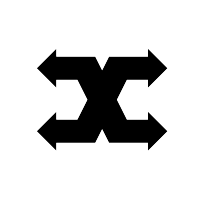 | ||||
WANs - also known as a Wide Area Network is a large network of information that is not tied to a single location. WANs can facilitate communication, the sharing of information and much more between devices from around the world through a WAN provider.
- Operate over a large geographically separated areas.
- Provide full-time remote resources connected to local services.
| Devices and Technology (WAN) | |||
|---|---|---|---|
| Router | Communication Server | Modem CSU/DSU/TA/NT1 | WAN Bandwidth Switch |
| 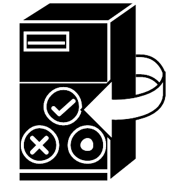 | 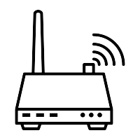 | 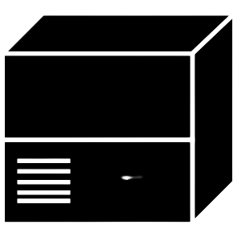 | |
Other Common WAN Technologies:
- Analog Modems - A device that converts the computer's digital pulses to tones that can be carried over analog telephone lines, and vice versa. Prior to the turn of the century, analog modems used to be standard equipment on most desktop and all laptop computers.
- Integrated Services Digital Network (ISDN) - a circuit-switched telephone network system that transmits both data and voice over a digital line. You can also think of it as a set of communication standards to transmit data, voice, and signaling. These digital lines could be copper lines.
- Digital Subscriber Line (DSL) - a modem technology that uses existing telephone lines to transport high-bandwidth data, such as multimedia and video, to service subscribers.
- Frame Relay - are devices that create one of two types of connections. Switched virtual circuits (SVC) or permanent virtual connection (PVC). Frame relay devices create SVCs when data needs to be transferred and then close those connections when they aren't in use.
- Asynchronous Transfer Mode (ATM) - a telecommunications standard defined by ANSI and ITU (formerly CCITT) for digital transmission of multiple types of traffic, including telephony (voice), data, and video signals in one network without the use of separate overlay networks.
- T(US) and E(Europe) carrier series: T1,E1,T3,E3 - These circuits use multiplexing technology to simultaneously carry multiple conversations in different 64-kbps channels. A single 64-kbps channel is called a Digital Signal 0 (DS0).
- Synchronous Optical Network (SONET) - a communication protocol, developed by Bellcore – that is used to transmit a large amount of data over relatively large distances using optical fibre. With SONET, multiple digital data streams are transfered at the same time over the optical fibre.
MANs - also known as a Metropolitan Area of network is a class of network which provides a distance of a large geographical area between 5 to 50 kilometers in range. This geographical area can include several buildings, such as a college campus, sometimes referred to as a campus network, or an area as large as a city (metropolitan area).
- A network that spans a metropolitan area such as a city or suburban area.
- Usually consists of two or more LANs in a common geographic area.
SANs - Storage-Area Networks is an independent high-speed network that interconnects and delivers shared pools of storage devices to multiple servers. Each server can access shared storage as if it were a drive directly attached to the server.
- A dedicated high-performance network used to move data between servers and storage resources.
VPNs - Virtual Private Network is an encrypted connection over the Internet from a device to a network. The encrypted connection helps ensure that sensitive data is safely transmitted. It prevents unauthorized people from eavesdropping on the traffic and allows the user to conduct work remotely. It is a dedicated high-performance network used to move data between servers and storage resources.
- It is a dedicated high-performance network used to move data between servers and storage resources.
- private network that is constructed within a public network infrastructure such as the global Internet.
- most cost effective method of establishing secured connection.
| VPN Types | ||||
|---|---|---|---|---|
| Access VPNs | Intranet VPNs | Extranet VPNs | ||
| enables users who are working remotely to securely access and use applications and data that reside in the corporate data center and headquarters, encrypting all traffic the users send and receive. | links outside customers, suppliers, partners, or communities of interest to an enterprise customer's network over a shared infrastructure using dedicated connections. | provides a site to site internal connectivity within the company. The collection of all internal company sites, connected in this way, is often referred to as the company's Intranet. Intranet VPNs provide the same level of connectivity and reliability as a fully private network. | ||
Bandwidth
Digital Bandwidth - is a medium that is used to measure te speed of the transmission capable of an ethernet network. It is determined as the number of pulses per second or the unit in bits per second.
- Bps - Bits per second is a common measure of data speed for computer modems and transmission carriers. As the term implies, the speed in bps is equal to the number of bits transmitted or received each second.
- Mbps - megabits per second is a measure of internet bandwidth. In simple terms, bandwidth is the download rate of your internet connection.
- Gbps - Gigabits per second is also a unit of measure where a single Gigabyte per second is equal to 1,000 Megabits per second (Mbps) or 1,000,000,000 bits per second. It is commonly used to measure data transfer speeds between hardware devices.
Throughput - refers to how much data can be transferred from one location to another in a given amount of time. It is used to measure the performance of hard drives and RAM, as well as Internet and network connections. It is conisdered as the actual measurement bandwidth.
Factors:
- Internetworking Device
- Type of data
- Network Topology
- Number of users on the network
- User's Computer
- Server Computer
- Power Conditions
Network Model
Data communication - The process where networks transmit digital data from one computer to another computer using a variety of wired and wireless communication channels. One such network, the Internet, is an immense global network of smaller interconnected networks linking millions of computers.
Networking Standards - Define the rules for data communications that are needed for interoperability of networking technologies and processes. Standards help in creating and maintaining open markets and allow different vendors to compete on the basis of the quality of their products while being compatible with existing market products.
OSI Model
Open Systems Interconnection Model
A conceptual framework used to describe the functions of a networking system displayed in layers. It characterizes computing functions into a universal set of rules and requirements in order to support interoperability between different products and software.
Advantages of a layered model:
- Reduces complexity
- Standardize interface
- Facilitates modular engineering
- Ensures technology compatibility
- Accelerates evolution
- Simplifies teaching and learning
The 7 Layers of the OSI Model
Application Layer: Layer 7
At this layer, both the end user and the application layer interact directly with the software application. This layer sees network services provided to end-user applications. The application layer identifies communication partners, resource availability, and synchronizes communication.
Peer-to-peer Communication - Each layer provides a protocol to communicate with its peer. When a packet is transmitted by a layer, a header is added to the data to be sent. The protocol data unit so-formed, is passed via a service access point to the layer below. This is then sent using the service of the next lower protocol layer.
PDUs - A protocol data unit is information delivered as a unit among peer entities of networks containing control information, address information or data. In layered systems, PDU represents a unit of data specified in the protocol of a given layer, which consists of protocol control information and user data.
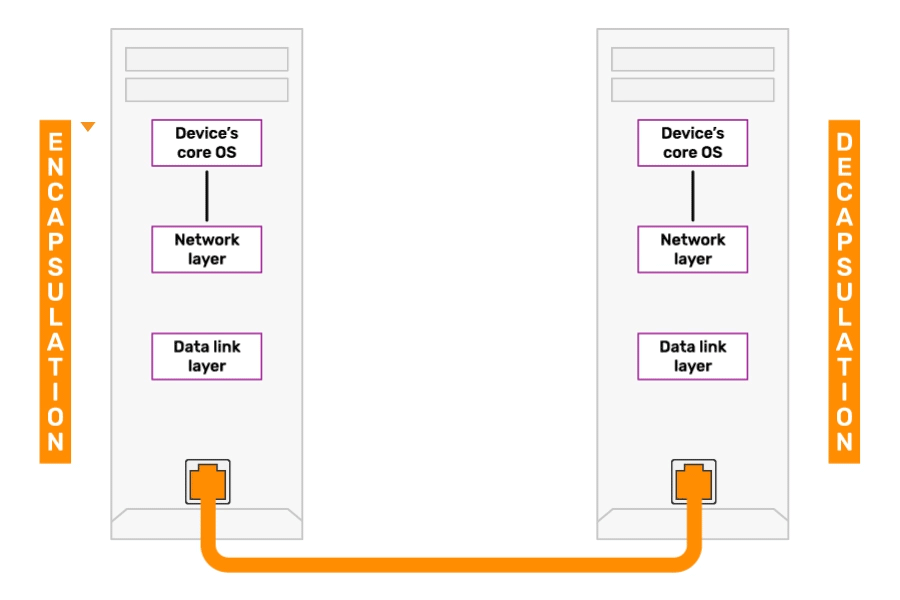
Encapsulation - The process in which some extra information is added to the data item to add some features to it. It adds the protocol information to the data so that data transmission can take place in a proper way. This information can either be added in the header or the footer of the data.
De-Encapsulation -The process where header and trailer in the model attached in encapsulation process are removed. Physical layer picks encoded signals from media and converts them in frames and hands them over to the data link layer.
TCP/IP Model
Transmission Control Protocol/Internet Protocol - A standard Internet communications protocols that allow digital computers to communicate over long distances.
- The process of sending data in the internet undergoes a packet-switched network, in which information is broken down into small packets, sent individually over many different routes at the same time, and then reassembled at the receiving end.
- It is the component that collects and reassembles the packets of data, while IP is responsible for making sure the packets are sent to the right destination.
- It was developed in the 1970s and adopted as the protocol standard for ARPANET (the predecessor to the Internet) in 1983.
TCP/IP model consists of four layers:
Application Layer: Layer 4
The top-most layer of four-layer TCP/IP model. Application layer is placed on the top of the Transport layer. Application layer defines TCP/IP application protocols and how host programs interface with Transport layer services to use the network.
Includes all the higher-level protocols like:
- FTP - File Transfer Protocol
- HTTP - Hypertext Transfer Protocol
- SMTP - Simple Mail Transfer Protocol
- DNS - Domain Naming Systems
- TFTP - Trivial File Transfer Protocol